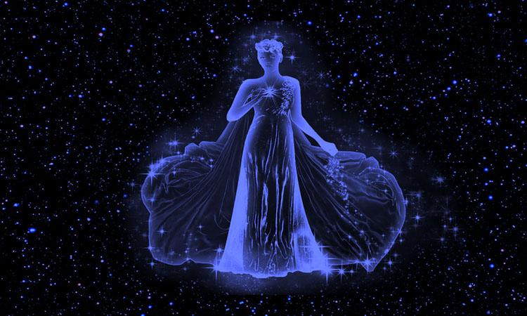
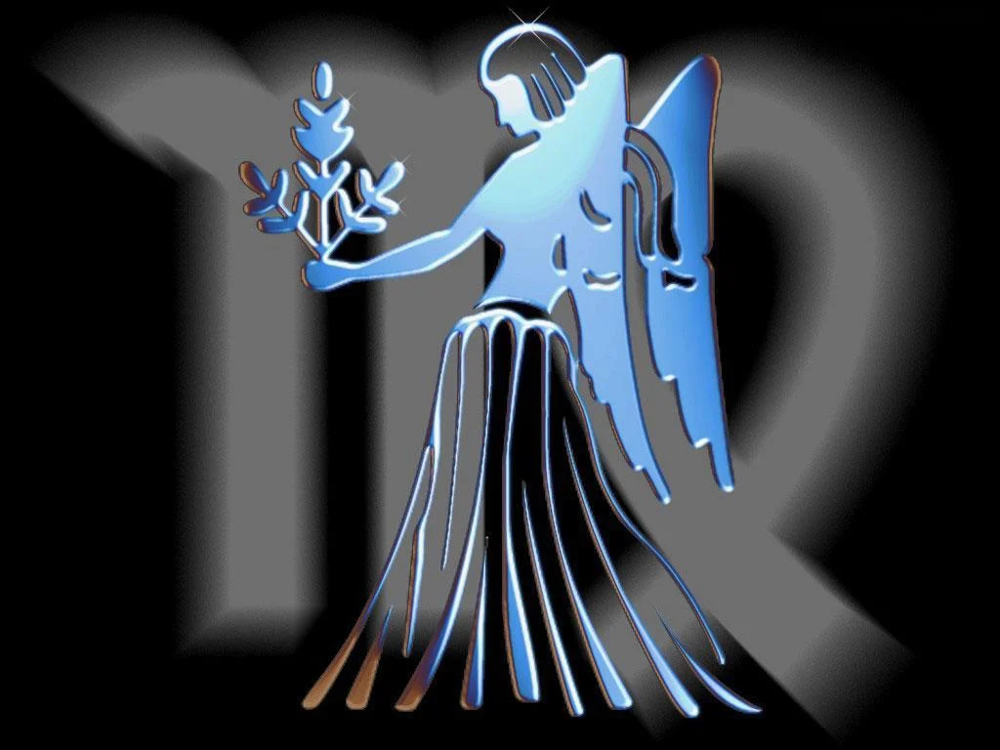
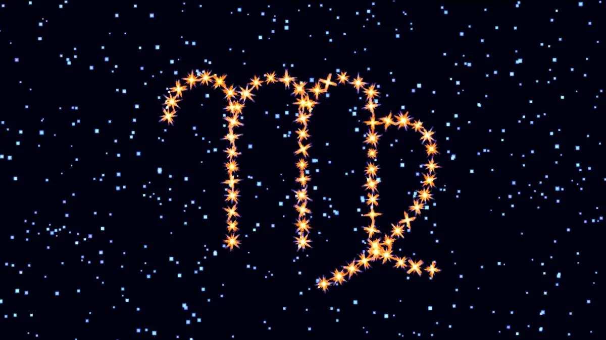

Отличительными чертами характера этого знака Зодиака являются внимательность и осторожность.
Характеристика знака Зодиака Дева / фото onlinegadanie.ru
Дева – шестой знак зодиакального гороскопа. К этому знаку Зодиака относятся люди, рожденные в период с 22 августа по 23 сентября.
Стихией знака Зодиака является земля, а символом – дева. Руководящая планета – Меркурий. Камни-талисманы: агат, малахит, горный хрусталь, лазурит, сердолик, лунный камень, яшма, авантюрин, нефрит и аметист.
Это один из самых предусмотрительных знаков Зодиака. Основные характерные ему черты характера: выносливость, осторожность, мнительность, пунктуальность, наблюдательность, предусмотрительность и надежность.
Дева – характеристика
Дева является воплощением принципа порядка, победы разума над чувствами, умения видеть целое в деталях. Представители данного знака больше других стремятся к совершенству во всем – отсюда тяга к обучению в течение всей жизни и желание учить окружающих. Такое стремление к лучшему позволяет Девам видеть изъяны вокруг, что нуждается в обязательном исправлении.
Интеллект Дев сочетает в себе логику и в то же время развитую интуицию. Внимание к деталям и скрупулезность в выполнении поставленных задач делает их прекрасными исполнителями, а критическое мышление, практичность и стремление к идеалу позволяют занимать руководящие должности.
Девы обычно не любят публичности и редко оказываются в центре всеобщего внимания. Они ценят достаток и комфорт. Потому неудивительно, что в свободное время представители данного знака предпочтут не шумные вечеринки, а компанию родных и близких друзей.
Мужчина Дева
Рожденные под этим знаком мужчины сдержанные, педантичные и практичные. Им характерно развитое чувство ответственности, здравый ум и стремление к стабильности. Из мужчины Девы получается отличный начальник и руководитель. Он твердо стоит на ногах, не поддается мечтаниям, точно знает свои цели и упорно к ним идет.
Черты характера Девы / фото ecoterica.com
Среди положительных черт характера мужчин Дев стоит выделять пунктуальность, основательность, добросовестность. Они всегда выполняют свои обязанности, хотя не очень любят брать их на себя.
Этo зeмнoй знaк, a пoтoму нe пpивык буpнo пpoявлять эмoции, ocoбeннo нa публикe. Девы стapaютcя избeгaть cитуaций, кoтopыe вывeдут из paвнoвecия.
В любви для представителей данного знака важна не романтика, а конкретные дела и действия.
Женщина Дева
Сообразительная, остроумная, обладает логическим мышлением. Женщина-Дева умеет поддержать разговор, с ней интересно вести разговор. Она всегда поддержат в трудную минуту и даст действительно полезный совет.
Среди главных достоинств Девы стоит выделить высокий интеллект и острый ум. К тому же она – это олицетворение ответственности, хотя очень скромная и предпочтет не быть в центре внимания.
Характер мужчины и женщины Девы / фото getbg.net
Часто представительницы данного знака изматывают себя совершенством и не прощают недостатков близкому окружению. Их легко могут взбесить такие качества, как нечистоплотность, сквернословие, нерешительность.
В любви женщина Дева ищет идеал. Она растворяется в партнере, отдавая всю себя. Представительницы данного знака Зодиака не ревнивые, доверчивые и нуждаются в защите.
Ребенок Дева
Дева – очень спокойный и уравновешенный ребенок. Среди них не бывает непосед и забияк. Единственное, что может настораживать родителей, так это то, что представители этого знака с детства ко всему придираются.
Эти дети любят чистоту и комфорт. Они не терпят перемен и живут по режиму.
Девы рано начинают читать и писать. Они очень понятливы: им достаточно одного объяснения, чтобы усвоить урок.
У Дев прекрасная память, что помогает им достигать высоких результатов в учебе.
Совместимость Дев с другими знаками / фото goroskop.guru
Совместимость с другими знаками
Наилучшая совместимость в любви у Девы со знаками земной стихии – Тельцами и Козерогами. Также они хорошо совместимы с Раком и Скорпионом.
Несовместимыми знаками для Девы являются Близнецы и Стрелец, хотя связь с Близнецами может быть полезна для карьеры, а со Стрельцом – для эмоциональной поддержки. Союз с Весами может быть выгодным в финансовом плане.
Что касается совместимости в браке, одним из лучших выборов для супружества будут Рыбы. Между тем, для духовного развития плодотворно партнерство со Львом.
Вас могут заинтересовать другие новости астрологии:
- Не боится рисковать: назван самый непредсказуемый знак Зодиака
- Астрологи назвали тройку идеальных пар по знаку Зодиака
- Время больших перемен: звезды сулят сюрпризы в любви трем знакам Зодиака
- Астрологи назвали тройку знаков Зодиака, с которыми сложно создать семью
- Названы самые ленивые знаки Зодиака